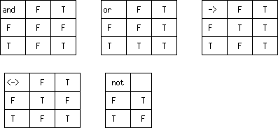

<html><head><title>

     LECTURE 19   An Introduction to the Logic Paradigm

</title></head>
<body bgcolor="white">


<h1>
<center>

     LECTURE 19   An Introduction to the Logic Paradigm

</center>

</h1>

<hr>
<!-- ============================================================= -->

<a href = "lecture19.html#math_logic">
  1   Mathematical Logic </a><br>

<a href = "lecture19.html#calculi">
  2   Logical Calculi
</a><br>


<a href = "lecture19.html#propositional">
  3   Propositional Calculus </a><br>
<pre>
      2.1   Truth Tables
      2.2   Satisfiability  and  universal  validity  of  propositional  sente
</pre>


<a href = "lecture19.html#computing">
  3   Computing with the Propositional Calculus</a><br>

<pre>
      3.1   Deciding whether a proposition is a tautology
      3.2   The Resolution Principle
</pre>


<a href = "lecture19.html#architecture">
  4   Boolean Algebra in Computer Architecture </a><br>


<a name="math_logic">  </a>

<h2> 1  Mathematical Logic </h2>

<P>
Beginning with  the  work  of  the  English  mathematician  Boole,  logical
reasoning, which had classically been semi-formalised using syllogisms, has
been made the subject  of mathematical investigation.  In the 20th  century
the formalisation  of  mathematical  reasoning  has  made  great  progress;
however it also has become apparent  that there are limitations on what  we
can possibly know through mathematical reasoning.

<P>
The need for  a tighter  formalism, even for  mathematics, became  manifest
when David  Hilbert showed  that to  express in  a purely  algebraic  style
Euclid's Geometry,  which had  been  regarded as  a model  of  mathematical
precision for over 2000 years,  required an extension of Euclid's  axioms -
the traditional  treatment  of  geometry  had,  in  effect,  hidden  axioms
embodied in the "correct" way of drawing the figures.

<P>
The kinds of problem that have been addressed by 20th century  mathematical
logicians are exemplified by:


<ul>
<li>
    Can we, by a systematic process, decide whether a mathematical
    proposition is true or false?
<li>
    Can we, by a systematic process, find a proof of a mathematical
    proposition if one exists?

<li>
    Is there a proof for every "true" statement of mathematics?
</ul>

<p>
In attacking these questions, which required the rigorous formalisation  of
logical reasoning, mathematicians were laying the foundations of the theory
of computation, since what can  be characterised formally can in  principle
be computed.

<P>
Conversely, we as  computer scientists,  may find it  easier to  understand
aspects of mathematical logic from a computational viewpoint. Consider  for
example the question:

<ul>
    Can we, by a systematic process, decide whether a mathematical
    proposition is true or false?
</ul>


<P>
In the  domain  of  arithmetic  (the theory  of  the  natural  numbers)  we
translate this  into  computing  terms  quite  easily.  Suppose  we  have a
proposition about natural numbers of the form
<pre>
        forall n P(n)
</pre>
<P>
where the property  P can  be tested  for given  values of  n by  running a
computation. Then let us write a Scheme function that systematically  works
through all possible values of <em>n</em>, checking if <em>P(n)</em> holds,
and returning the value of the first n for which P does  not hold. So if P
is a theorem,  our function never halts. <em>So we have  related the
problem of deciding  if a mathematical proposition  is  true or  false  to
the  problem  of  deciding whether a given program stops.</em> Now we saw
in Lecture 15 that we cannot in general determine whether a given program
halts. So we may suspect  that we cannot in general determine whether a
given mathematical proposition  is true or false.

<p>
Our argument is  not watertight,  for while we  shown that  the problem  of
determining the truth of a certain propositions in arithmetic is a  halting
problem, we haven't shown that it  is a general halting problem.  However a
watertight linking of  these two can  be made,  as was first  done by  Alan
Turing, who showed, using an argument about computability, that determining
the truth of a mathematical proposition is <em>undecidable.</em>

<p>
As a specific example, consider  the <em>Goldbach
Conjecture</em> which states  that
every even number greater  than 2 is  the sum of two  primes. Now we  could
(quite) easily write a function <tt>goldbach?</tt>
for which the call <tt>(goldbach?  n)</tt>
would evaluate to <tt>#t</tt>
if the Goldbach hypothesis  is true for the  natural
number <tt>n</tt>,
and <tt>#f</tt> if it is false (since both of the primes must be less than
<tt>n</tt>
we don't have to search through the infinite set of primes to verify  the
conjecture for a given <tt>n</tt>).
Thus, for a given  <tt>n</tt> the Goldbach function  will
terminate. Now consider the function:

<pre>
    (define (test_goldbach n)
        (if (goldbach? n) (test_goldbach (+ n 2)) #f)
    )
</pre>

<p> The execution of  <tt>(test_goldbach 4)</tt> will halt  if and only  if
the Goldbach hypothesis  is <em>false</em>.  Does this  execution halt?  We
don't know, since mathematicians  have never found either  a proof of  or a
counterexample to the Goldbach conjecture.

<p>
In general we may  conclude that any mathematical  system that is  powerful
enough to characterise a general computation is undecidable.


<a name="calculi"> </a>
<h2>2  Logical Calculi</h2>

<p>
A system of mathematical logic is normally called a <em>calculus</em>.
This usage  must
not be  confused  with  the  <em>differential
and  integral  calculus</em>  which  is a
separate branch of  mathematics. There are  3 logical calculi  of interest  to
computer scientists.
<ul>
<li>
    1 The Propositional Calculus:  This is essentially  the work of  Boole,
    and is  otherwise   known   as  Boolean   algebra.   It  deals   with
    how <em>propositions</em> considered as unstructured statements, can be
    legitimately combined using   operations    such    as    <tt>and</tt>,
   <tt>or</tt>    and <tt>implies</tt>.

<li>
    2 The Predicate Calculus: This is built on the propositional calculus
    by allowing the propositions to have internal structure. For example,
<pre>
        likes(John,Mary)
</pre>
    might be a proposition encoding the idea that John likes Mary.

<p>
    3 The Lambda Calculus: The functional subset of Scheme can be considered
    as an implementation of a variant of this calculus.

    The Lambda Calculus <em>is </em> a fully
    fledged logical calculus, which offers
    advantages in <em>proving properties of
    computations</em>. As exploited and developed
    by computer scientists, most notably Robin
    Milner, it is a viable alternative to the
    Predicate Calculus, and has been embodied in a
    semi-automatic proof system HOL (Higher Order
    Logic)
</ul>

<a name = "propositional"></a>
<h2>3  Propositional Calculus</h2>

<p>The propositional calculus  is built from  the following components,
given below in an approximation to their conventional typeset form.

<pre>
     propositional variables p,q,r,...
     propositional connectives &amp;, \/, ~, ->, &lt;->
</pre>

We can represent sentences of the propositional calculus in Scheme by using
the usual Scheme conventions
<pre>
     (and p q)
     (or p q)
     (not p)
     (-> p q)
     (&lt;-> p q)
</pre>

<h3>2.1  Truth Tables</h3>

<p>
Given a sentence S  in the propositional calculus,  and a mapping from  the
propositional variables occurring in S to the truth values T and F, we  can
define an <em>interpretation</em>
of S under this mapping as being the value T  or F
depending on how S is evaluated according to the following scheme of  truth
tables:  <br>

<center>
<!-- source lecture19.lscm -->

</center>

For example  (and  p q)  under  the  mapping p  -->  T,  q -->  F  has  the
interpretation F. This logical concept of interpretation is very similar to
the concept of evaluation that we encountered when we discussed the  Scheme
interpreter.

<h3>
2.2  Satisfiability  and  universal  validity  of  propositional  senteces.
</h3>

<h4>Definition</h4>

<p>
A  sentence   S   in   the   propositional   calculus   is   said   to   be
<em>satisfiable</em> if there  is a  mapping of  variables to  truth-values
under which it S is interpreted as T.

<h4>Definition</h4>

<p>
A  sentence   S   in   the   propositional   calculus   is   said   to   be
<em>unsatisfiable</em> if there  is no mapping
of  variables to truth-values  under
which it S is interpreted as T.

<h4>Definition</h4>

<p>
A sentence S in the propositional calculus is said to be <em>universally
valid</em> if for all mappings of variables to truth values S is
interpreted as T.  We also speak of such a sentence as being a
<em>tautology</em>.

<a name = "computing"></a>
<h2>3  Computing with the Propositional Calculus</h2>


<p>
The prime  observation  that offers  one  approach to  computing  with  the
propositional calculus is <em>working
out an interpretation of a  propositional
calculus sentence is  the same  kind of  problem as  interpreting a  Scheme
expression</em>

<h3>3.1  Deciding whether a proposition is a tautology </h3>

<p> That is to say, the mapping of propositional variables to truth  values
can be represented  in an  environment, and we  can use  <tt>eval_env</tt>,
with  suitable  entries  for  <tt>-></tt>
and  <tt>&lt;-></tt>  in  the  environment,  to  find
interpretations   (assuming   that   <tt>and</tt>   and   <tt>or</tt>   and
<tt>not</tt> are  already in  place. Note  that  we do  not need  to  treat
<tt>and</tt> and <tt>or</tt> as special forms for this purpose.

<p>
Now, given a sentence S, there are only a finite number n of  propositional
variables in  S,  so  there  are  <tt>2<sup>n</sup></tt>
possible  environments  binding  the
variables of S to have the values T and F.

<p>
So we can <em>decide</em>
if a sentence in the Propositional Calculus is universally
valid (the good news) but it may take us <em>2<sup>n</sup></em>
evaluations of the sentence to
do so  (the  bad  news).  Decidability is  possible  in  the  Propositional
Calculus because it  is a very  limited formalism -  too weak to  construct
arithmetic, for example.

<p>
So, we can decide whether a sentence in Propositional Logic is a  tautology
in exponential time.  Can we do  better? We  can use a  proof system  which
embodies rules of  classical logic  (e.g. <em>modus
ponens</em>) to  try to  find a
proof for  a  propositional sentence  in  less than  exponential  time.  In
practice such proof systems  may work quite well,  but it is believed  that
any (finitely statable) proof system  for Propositional Logic will  require
exponential time to find proofs of  some propositions. This has been  shown
to be the case for some proof systems.


<h3>3.2  The Resolution Principle</h3>

<p>
The proof method that has had most influence on computing is the
<em>resolution principle</em>.
In the propositional calculus, this appears as
follows.

<p>
Consider two sentences of the Propositional Calculus of the form:

<pre>
        ~p \/ q
         p \/ r
</pre>

<p>
from these we may infer

<pre>
        q \/ r
</pre>

<p>
if we consider the tautology (~p \/ q) &lt;-> (p -> q), so we have

<pre>
        p -> q
        p \/ r
</pre>

<p>
from which we may infer

<pre>
        q \/ r
</pre>

<p>
[Or in English,  if proposition p  implies proposition q  and we know  that
either proposition p is true  or proposition r is  true, then we may  infer
that proposition q is true or proposition r is true.]

<p>
Now look at what we have done. From:

<pre>
        ~p \/ q
         p \/ r
</pre>

<p>
we have inferred

<pre>
        q \/ r
</pre>

<p>
This is rather like <em>cancellation</em>
of a  term in ordinary algebra. This kind  of
"cancellation" between negated and non-negated  terms in a disjunction is  the
essence of resolution.

We can systematise the use of this principle in a way rather parallel to  what
we did  for polynomials  in our  last programming  problem. Remember  that  we
defined a function to convert an arbitary expression whose only functions were
+ and *  to the standard  expression of a  polynomial as a  <em>sum
of  monomials</em>.
Well, we can  do something  very similar to  a sentence  of the  propositional
calculus - we can convert it into a conjunction of disjunctions of literals. A
literal is  a propositional  variable or  its negation.  So a  disjunction  of
literals in  logic plays  the same  role as  a power  product in  polynomials.
Because it  doesn't matter  how  many times  a  given expression  occurs  in a
disjunction,   we   don't   need   a   distinction   corresponding   to    the
monomial/power-product distinction.

<p>
Such a disjunction of literals is called a <em>clause</em>.

<p>
An empty  disjunction of  literals is  called  the <em>empty
clause</em> -  it  always
evaluates to F. Thus the empty clause is unsatisfiable.

<p>
The  process  of  converting  a  sentence  of  Propositional  Calculus  into a
conjunction of clauses is called putting it into <em>conjunctive
normal form</em>.

<p>
It proceeds as follows:

<p>
(1) Get rid  of all  connectives except  &amp;, \/ and  ~ by  using the  following
tautologies, left to right. [By using a tautology left-to-right I mean that we
use what is to the left of the major &lt;-> symbol as a pattern to match  against
any sub-expression  of our  sentence, and  we replace  it by  the  appropriate
version of what is to the right of the major &lt;-> symbol.]
<pre>
(p &lt;-> q)       &lt;->         ((p -> q) &amp; (q -> p))
(p -> q)        &lt;->         (~p \/ q)
</pre>

(2) Now use the following tautologies left to right:

<pre>
p \/ (q &amp; r)    &lt;->         (p \/ q) &amp; (p \/ r)
(q &amp; r) \/ p    &lt;->         (p \/ q) &amp; (p \/ r)
~ (p \/ q)      &lt;->         ~p &amp; ~q
~ (p &amp; q)       &lt;->         ~p \/ ~q
~~p -> p
</pre>

(3) Finally we can eliminate redundant copies of the same literal occurring in
the same clause [since (p\/p) &lt;-> p],  and also if a literal and its  negation
occur in the same clause, we delete them both [since (p\/-p &lt;-> T)]

The general case of the resolution principle in Propositional Calculus
is to take two <em>clauses</em>, that is to say sentences of the form:

<pre>
      l<sub>1</sub> \/ l<sub>2</sub> \/ l<sub>3</sub> ....\/   p \/....\/ l<sub>n</sub>
      k<sub>1</sub> \/ k<sub>2</sub> \/ k<sub>3</sub> ....\/  ~p \/....\/ k<sub>m</sub>
</pre>

These are  equivalent,  using  the associativity  and  commutativity  laws  of
Boolean algebra to:

<pre>
     p  \/  (l<sub>1</sub> \/ l<sub>2</sub> \/ l<sub>3</sub> ...\/ l<sub>n</sub>)
     ~p \/   (k<sub>1</sub> \/ k<sub>2</sub> \/ k<sub>3</sub> ...\/ k<sub>m</sub>)
</pre>

Recall that l<sub>1</sub>...l<sub>n</sub> are literals, that is they are either of the form  q or
of the form ~q for some propositional variable q.

Then we may infer, from our earlier discussion, that:

<pre>
  l<sub>1</sub> \/ l<sub>2</sub> ...\/ l<sub>n</sub> \/ k<sub>1</sub> \/ k<sub>2</sub> \/ k<sub>3</sub> .... \/....\/ k<sub>m</sub>
</pre>

that is we have "cancelled out" a propositional variable and its negation.

<p>
The resolution principle provides  a <em> complete  proof method </em>  for
the propositional  calculus,  that  is to  say  systematic  application  of
resolution will always find a proof if one exists <em>provided we use proof
by reductio ad absurdum</em>. That is to say we start with the negation  of
what we want  to prove and  proceed to resolve  clauses against each  other
until we obtain an unsatisfiable clause, which is our demonstration of  the
"absurd".


<p>
To use resolution to prove a proposition S, do the following steps:

<pre>
    (1) Negate the sentence to be proved obtaining ~S
    (2) Express ~S as a conjunction of clauses
    (3) Systematically apply the resolution principle to infer new clauses
        until EITHER

        (a) the empty clause is found, In this case we know that ~S is
        unsatisfiable, so that S is a tautology.

        OR

        (b) until there are no more new resolutions to be done.
</pre>

<p>
Since the only new clauses we get by resolution contain the same variables  as
the original sentence S,  there are only a  finite number of possible  clauses
that can be generated,
so the above process MUST terminate. However there  are
<em>O(2<sup>n</sup>))</em>
many  different  clauses  possible  on  n  variables,  so  we  could  take
exponential time to find a proof, or to fail to find a proof.
<p>
For example, consider the proposition:
<pre>
    ((p -> q) &amp; (q -> r)) -> (p -> r)
</pre>

<p>
To prove this by resolution we negate it:
<pre>
   ~( ((p -> q) &amp; (q -> r)) -> (p -> r) )
</pre>

<p>
And now replace all instances of  the -> connective

<pre>
   ~( ~((~p \/ q) &amp; (~q \/ r)) \/ (~p \/ r) )
</pre>

<p>
now we move the outermost "~" inwards (we have plenty of choice here, but
I'm trying to make things look simpler).

<pre>
    ~~((~p \/ q) &amp; (~q \/ r)) &amp; ~(~p \/ r) )
</pre>

<p>
Now we can use the fact that double negation is affirmation, and also move
the "~" at the right inwards:


<pre>
    ((~p \/ q) &amp; (~q \/ r)) &amp; (~~p &amp; ~r) )
</pre>

<p>
Removing another double negation, we have a clausal form

<pre>
    ((~p \/ q) &amp; (~q \/ r)) &amp; (p &amp; ~r) )
</pre>

<p>
that is the clauses

<pre>
    ~p \/ q    [1]
    ~q \/ r    [2]
    p          [3]
    ~r         [4]
</pre>

Resolving [1] with [3] we obtain

<pre>
    q          [5]
</pre>

Resolving [2] with [4] we obtain

<pre>
    ~q         [6]
</pre>

<p>
Resolving [5] with [6] we obtain the  empty clause (the hungry tiger) and  our
proof is  done.  But  we  might  observe  that  [5]  and  [6]  are  manifestly
contradictory.

<a name = "architecture"></a>
<h2>4  Boolean Algebra in Computer Architecture</h2>

<p>
Many of you will  know that boolean algebra  (equivalent to the  Propositional
Calculus) is used in the  design of computers. Do we  have a paradox here?  We
have seen  that it  is  decidable whether  a  statement in  the  Propositional
Calculus is a tautology, and yet if computers are built out of logic circuits,
surely  the  behaviour  of  a  program  can  ultimately  be  translated   into
Propositional Logic, and so  should be decidable. But  the halting problem  is
undecidable.

<p>
There is no real paradox, because  any general purpose computing machine  must
have memory  elements which  give  it <em>state</em>.
The  behaviour of  these  memory
elements cannot be characterised in the Propositional Calculus, so there is no
paradox.
<p>
Thus Boolean Algebra plays a significant role in the design of computers, but
it is inadequate to analyse a design completely.


</body></html>
